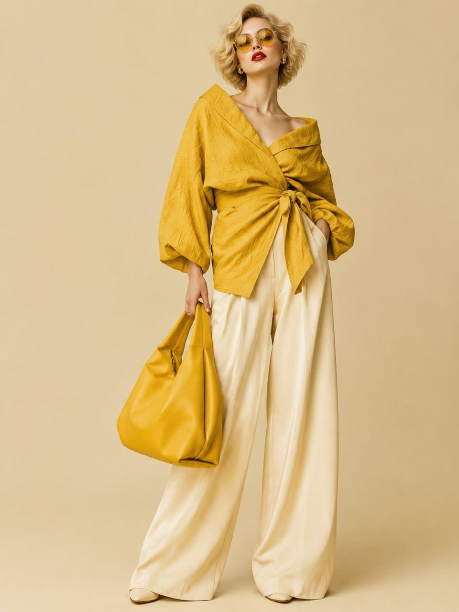

Vogue monochrome yellow editorial
WRD-025Wardrobegpt-image-2.5 flareby Alex Zhang (@Alex_allinai)2026-09-28

High-fashion Vogue-style monochrome yellow editorial — tonal styling, soft even light, negative space.
Prompt
{
"image_request": {
"goal": "Create a high-fashion Vogue editorial portrait with monochrome yellow styling and minimalist studio background",
"creative_style": "Vogue magazine cover aesthetic, minimalist luxury fashion editorial, monochromatic styling, soft studio lighting, refined elegant composition, large serif typography overlay space",
"overall_theme": "elegant minimalist high fashion",
"mood_vibe": "cool confident sophisticated",
"style_keywords": ["Vogue editorial", "high fashion", "monochromatic", "mustard yellow", "minimalist", "luxury", "studio portrait", "elegant", "sophisticated"],
"color_grading": {
"palette": "mustard yellow, cream, beige, warm skin tones, red lip accent",
"lut": "Vogue editorial warm matte",
"mood": "luxurious calm"
}
}
}
Now with gpt-image-2.5, flare, sunburst, nano banana, and midjourney models. Try it: @neospark_HQ #AIArt #FashionAI #EditorialPhotography #PromptSharing #NeoSparkTags: monochrome, Vogue, negative space